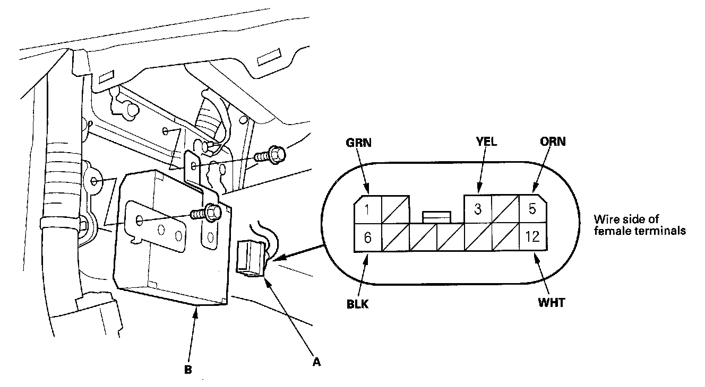
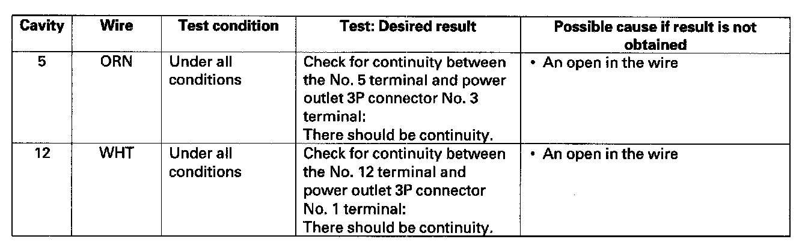
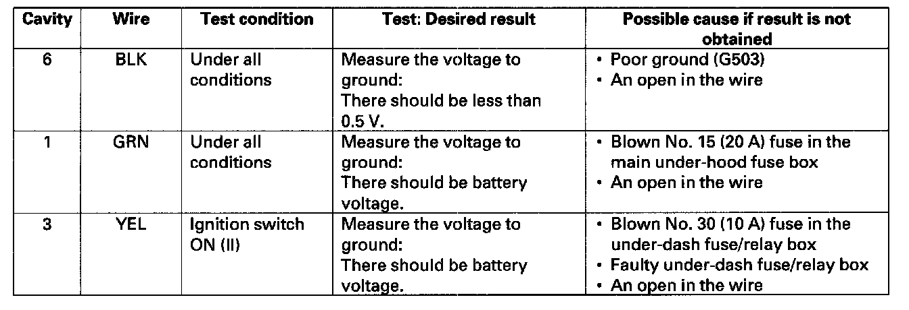

AC Inverter Unit Input Test
AC Inverter Unit Input Test1. Make sure you have the anti-theft codes for the audio and navigation system (if equipped).
2. Make sure the ignition switch is OFF.
3. Disconnect the battery negative cable.
4. Remove the driver's console side trim.

5. Disconnect the 12P connector (A) from the AC inverter unit (B).
6. Inspect the connector and socket terminals to be sure they are all making good contact.
- If the terminals are bent, loose or corroded, repair them as necessary, and recheck the system.
- If the terminals look OK, go to step 7.

7. With the control unit still disconnected, make these input tests at the connector.
- If any test indicates a problem, find and correct the cause, then recheck the system.
- If all the input tests prove OK, go to step 8.

8. Reconnect the connector, turn the ignition switch ON (II), and make these input tests at the connector.
- If any test indicates a problem, find and correct the cause, then recheck the system.
- If all the input tests prove OK, replace the AC inverter unit.